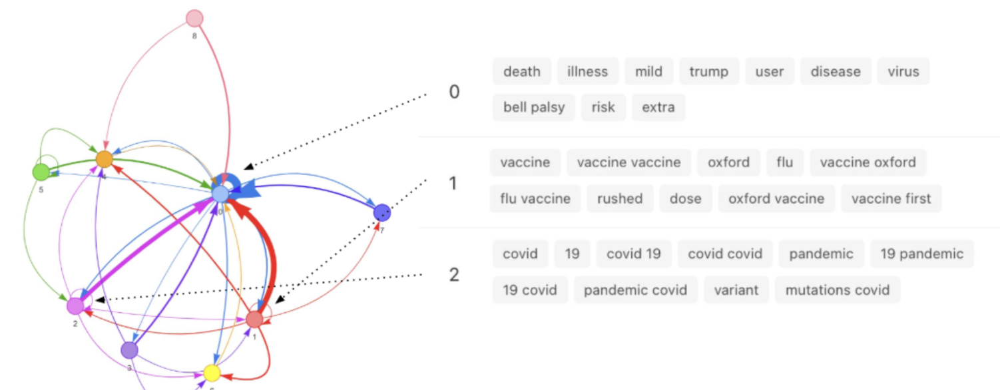

Modeling Human Beliefs with LLMs
ACL · System Demonstrations · 2023
Priniski, J. H., Verma, I., & Morstatter, F. (2023). Pipeline for modeling causal beliefs from natural language. Proceedings of the 61st Annual Meeting of the Association for Computational Linguistics (Volume 3: System Demonstrations), 436–443.
Mapping Human Beliefs from Language
Causal reasoning is a core cognitive function and is central to how people learn and update their beliefs. We present a causal language analysis pipeline that leverages a large language model to identify causal claims in natural language documents, and aggregates claims across a corpus to produce a causal claim network.

Aggregating causal claims reveals the interlocking topics in a corpus
Extracted cause-effect tuples serve as directed edges in the causal claim network, which are strung together throughout the corpus. The edge direction encodes the direction of the causal relation, while edge weights encode the number of instances in which one entity was said to cause another.
The clusters included vaccines and their anticipated consequences, spanning topics such as death, side effects, immunity, and antibodies. Clustering simplifies the resulting graph by mapping semantically similar claims to a common node, allowing researchers to examine how these topics are linked across the corpus.
From Text to Networks of Causal Beliefs
In collaboration with the USC Department of Computer Science, we developed the Causal Claims AI Pipeline by fine-tuning an open-weight transformer model on a dataset of causal claims and extending it to generate interactive networks of people’s belief systems from identified causal relationships.
- Extract causal claims. A RoBERTa-XL transformer identifies which words belong to cause and effect events in each document.
- Identify causal topics. Cause-and-effect word spans are clustered by their semantic embeddings, grouping related entities across documents.
- Construct the network. Extracted cause-effect pairs become directed edges; edge weights encode how often one entity was said to cause another.
The open-source pipeline provides the code for extracting causal claims, clustering topics, and building these networks.
Mapping Causal Beliefs About COVID-19 Vaccines
To test this pipeline, we built a causal claim network using a set of 6,000 tweets about the COVID-19 vaccine. The pipeline returned 408 extracted causal claims belonging to nine distinct clusters.
The clusters covered specific vaccines, including Oxford and Pfizer, alongside the pandemic, coronavirus, death, side effects, immunity, and antibodies. These topics varied in meaning and valence, revealing the breadth of considerations guiding discussion of COVID-19 vaccines. The discussion connected vaccination with both anticipated protection, such as immunity and antibodies, and feared harms, such as side effects and death. For health communication research, these expressed causal beliefs provide a starting point for designing surveys that assess the specific benefits and risks people associate with vaccines.
To examine how vaccine attitudes fit within broader systems of medical and political distrust, see my separate COVID-19 belief study, which tracked how preexisting distrust shaped skepticism before and during the first wave of U.S. cases.
Identifying Cause-and-Effect Language
We tested two transformer versions of our causal relation identification model, BERT and RoBERTa-XL, against SCITE, the previously reported state-of-the-art model. Our RoBERTa-XL version achieved the highest precision, recall, and F1 scores, establishing state-of-the-art performance on this benchmark at the time of publication.
| Model | Precision | Recall | F1 |
|---|---|---|---|
| SCITE (prior benchmark) | 0.833 | 0.858 | 0.845 |
| BERT (our version) | 0.824 | 0.858 | 0.841 |
| RoBERTa-XL ★ (our version) | 0.883 | 0.865 | 0.874 |
Measuring Changes in Personal Narratives After Networked Communication
In a separate paper published in PNAS (Priniski et al., 2026), I applied this pipeline to measure how networked communication changed personal narratives. Before and after network interaction, participants wrote tweet-like personal narratives about the Fukushima nuclear disaster. We used the causal language pipeline to identify causal claims in those narratives and cluster their cause-and-effect spans by semantic topic. Comparing the number and content of claims before and after interaction revealed how networked communication shifted participants’ personal narratives.
Participants in fully connected hashtag-matching networks showed the largest increase in causal language, with most added claims focusing on causes of the disaster.
See how I applied this pipeline in the PNAS network experiment to measure shifts in personal narratives following networked communication, alongside the hashtag alignment method and its behavioral results.